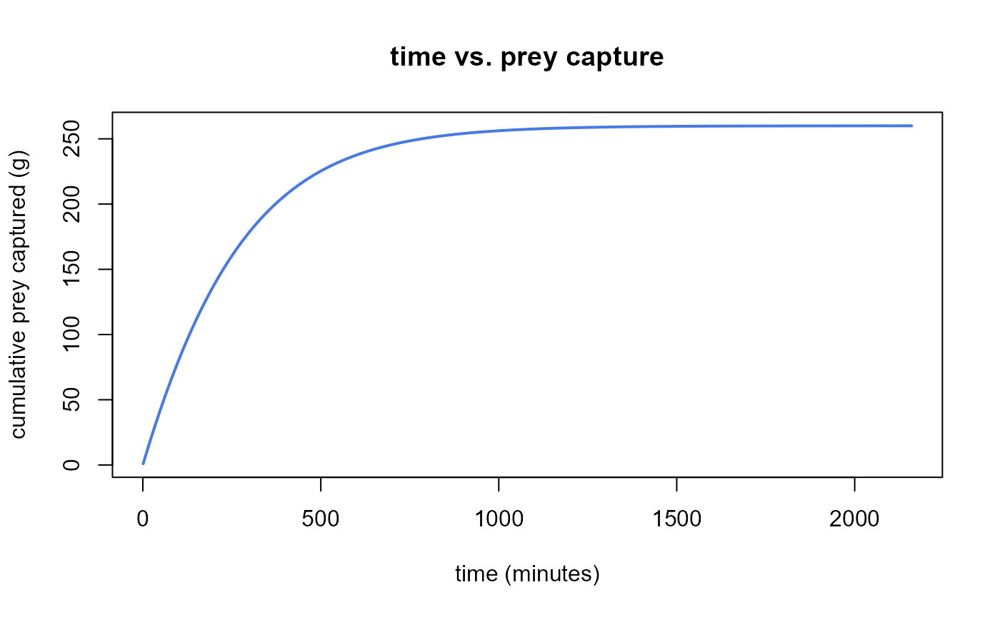
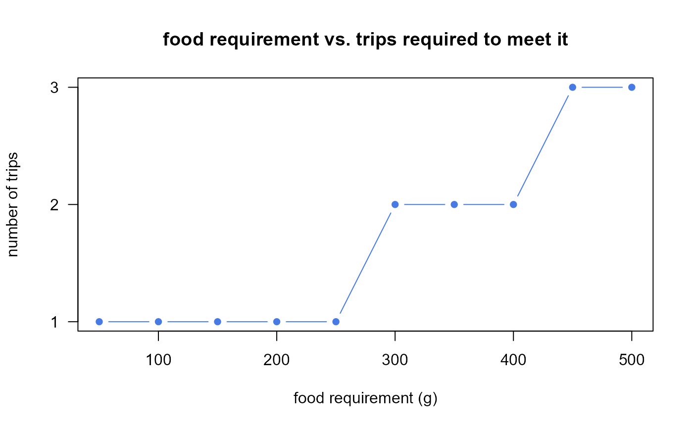
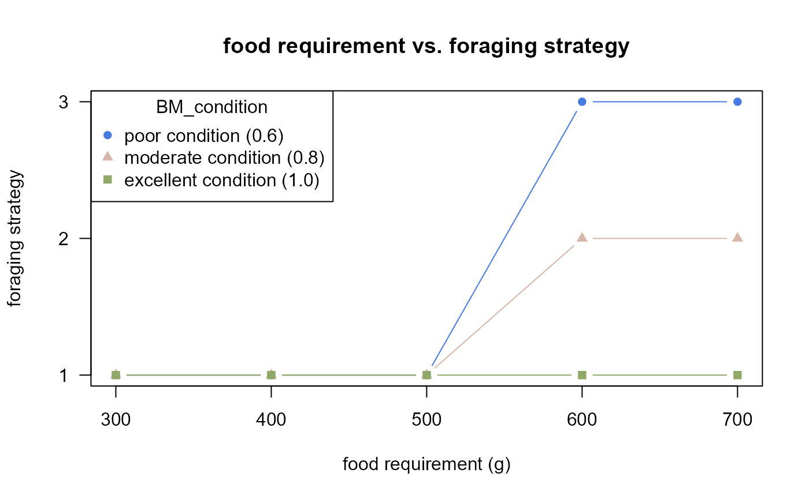
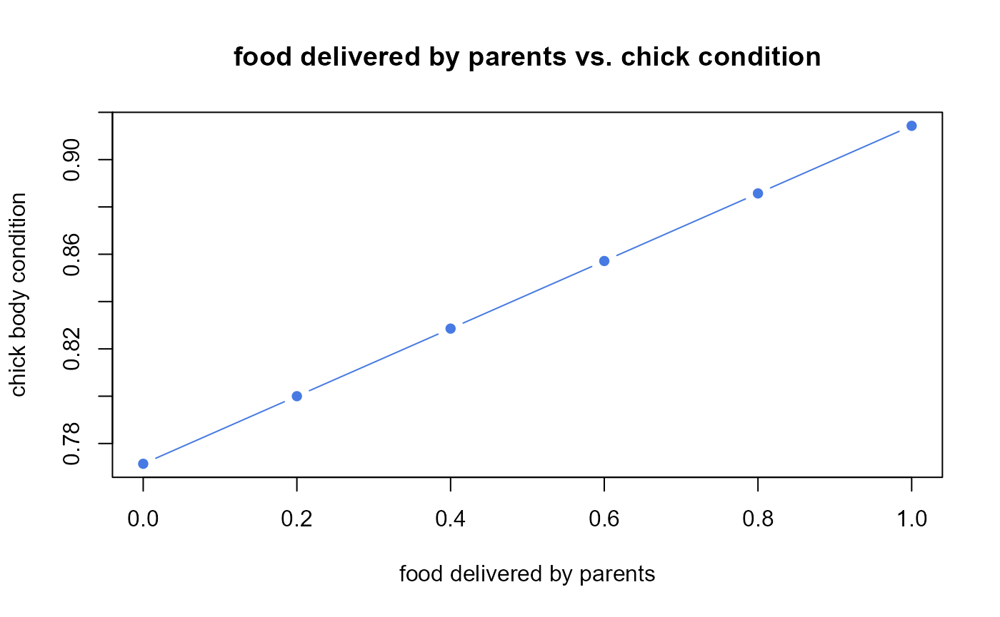
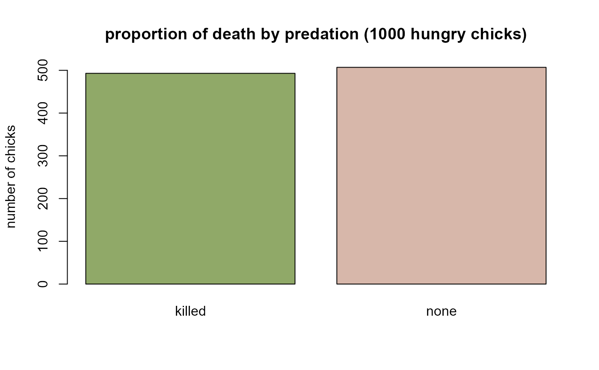
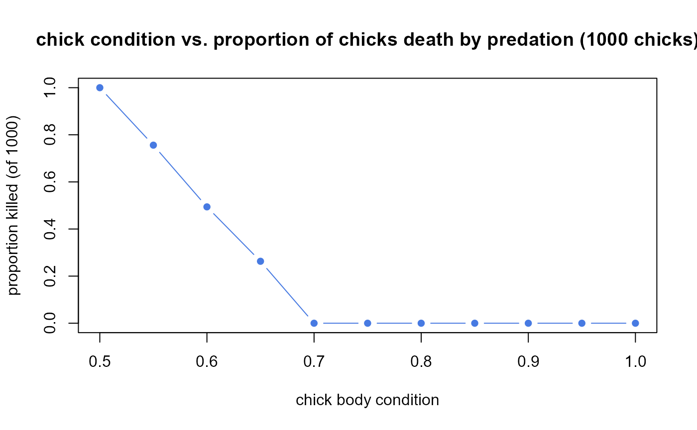
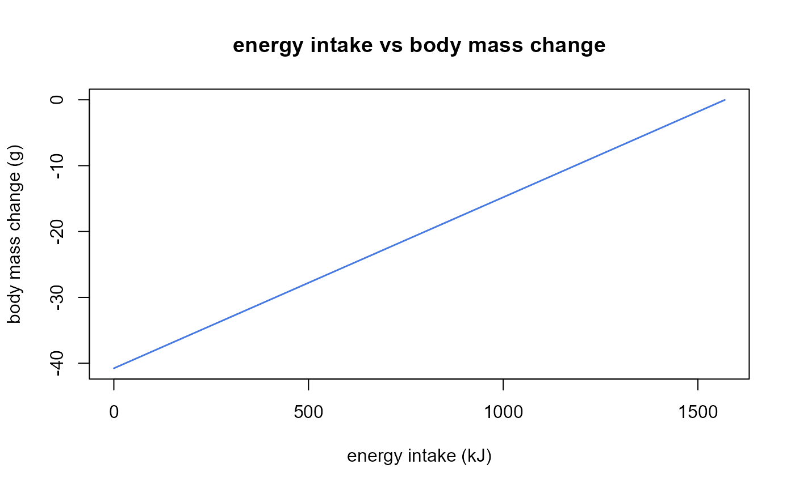
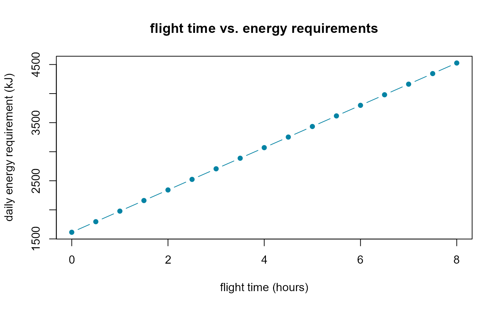
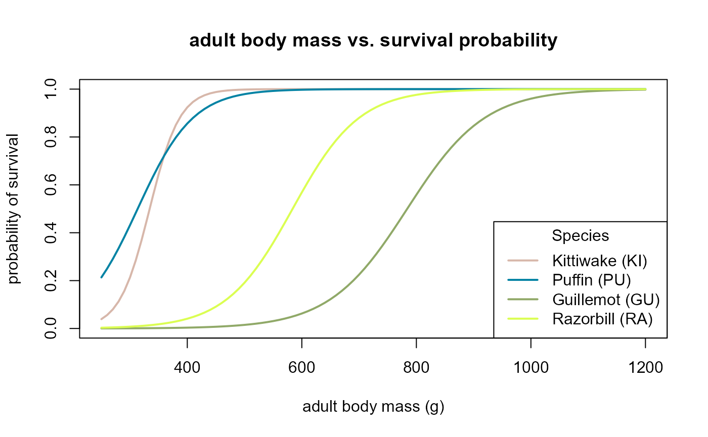

Main functions
J_main_functions.RmdIn this chpater the main functions that drive the seabORD core processes are explaied. Together, these functions determine how birds acquire food, provision chicks, update their energetic state and ultimately survive to the next breeding season. For a broader description of the overall model structure, see the seabORD overview. The functions are grouped according the stage of the simulation in which they are used:
-
Foraging and adult behaviour
Calculate the time taken to forage required amount (
calc_foragecapture)Calculate the foraging strategy for the timestep (
calc_strategy) -
Chick provisioning and growth
Parenting the chicks (
calc_chickcare)Chick mortality as a result of adults not attending the nest (
calc_unattendmortality)Chick mortality as a result of other causes (
calc_othermortality)Puffin chick mortality from predation due to hunger (
calc_puffinmortality) -
Adult state update
Body mass increase for adult birds (
calc_adultbmchange)Calculate Daily Energy Requirement (
calc_adultdee) -
Adult survival
Probability of winter survival (
calc_pSurvival)
1. Foraging and adult behaviour
1.1. Calculate the time taken to forage required amount (calc_foragecapture)
A detailed description of calc_foragecapture(),
including its arguments and returned values, can be found in the function
reference.
This function estimates how quickly a bird can acquire prey while foraging. Food intake depends on both prey availability and the bird’s maximum feeding rate (Holling, 1959). The resulting capture curve is then used throughout the model to determine how long individuals must forage to meet their energetic demands.
Example 1 - pray capture (captured_g) through time
(tmin)
The function returns a lookup table describing how prey
(captured_g) accumulates through time (tmin).
Initially, prey is captured rapidly , but the rate gradually slows as
available prey becomes depleted. The resulting curve can be used to
estimate how long a bird must remain in a foraging area to obtain a
given amount of food.

1.2. Calculate the foraging strategy for the timestep (calc_strategy)
A detailed description of calc_strategy(), including its
arguments and returned values, can be found in the function
reference.
This function determines how an adult bird allocates its time between self-maintenance and chick provisioning during a single model time step. The selected foraging strategy depends on energetic constraints, available foraging time, and the bird’s current body condition. As conditions deteriorate, adults may progressively reduce nest attendance and eventually abandon the breeding attempt in order to prioritise their own survival.
The function can return on of 4 outcomes:
“1” = Provisioning chick while maintaining attendance
“2” = Chick left unattended for part of the time step
“3” = Breeding attempt abandoned
“4” = Adult already dead
Example 1 - effect of change in food requirement
(Fg)
As food requirements (Fg) increase, birds must undertake
additional foraging trips to meet demand (n_trips).
Eventually, time constraints may limit how much food can be collected,
forcing changes in behaviour.

Example 2 - effect of change in body condition
(BM_condition)
Adult body condition (BM_condition) influences the birds
foraging startegy (feeding_mode). Birds in poor condition
are less able to prioritise chick provisioning and may switch to reduced
attendance or nest abandonment at lower food requirements than birds in
good condition. As condition approaches the abandonment threshold
(BM_adult_abdn), the bird may switch from to
nest-unattended or nest-abandoned strategies (“1” = Provisioning chick
while maintaining attendance, “2” = Chick left unattended for part of
the time step, “3” = Breeding attempt abandoned).

2. Chick provisioning and growth
2.1. Parenting the chicks (calc_chickcare)
A detailed description of calc_chickcare(), including
its arguments and returned values, can be found in the function
reference.
This function updates chick growth, body condition, attendance status, and survival during each model time step. Food delivered by both parents contributes to chick growth, while reduced parental attendance increases the amount of time chicks are left unattended. Together, these processes determine whether chicks survive and continue developing.
Example 1 - reduced parental provisioning (Ereq_intake)
lowers chick condition (BM_condition)
When parents deliver less food (Ereq_intake), chicks
gain less mass and their body condition (BM_condition)
declines. This can increase vulnerability to mortality processes later
in the simulation.

2.2. Chick mortality as a result of adults not attending the nest (calc_unattendmortality)
A detailed description of calc_unattendmortality(),
including its arguments and returned values, can be found in the function
reference.
This function evaluates whether a chick dies because it has been left unattended for too long. Mortality risk increases as unattended time approaches the species-specific maximum duration that chicks can safely remain alone.
2.3. Chick mortality as a result of other causes (calc_othermortality)
A detailed description of calc_othermortality(),
including its arguments and returned values, can be found in the function
reference.
This function applies a background mortality risk that represents causes of death not explicitly modelled elsewhere, such as adverse weather events unrelated to chick condition.
Example 1 - Proportion of chicks dying of “other” causes
(CoD = other)
In each simulation there is a small probability that mortality occurs
due to background causes. By repeating the calculation 1,000 times over
a 30-day period (seasonlength) we can visualise the
proportion of individuals that survive (CoD = none) versus
those that die from other causes (CoD = other).
2.4. Puffin chick mortality from predation due to hunger (calc_puffinmortality)
A detailed description of calc_othermortality(),
including its arguments and returned values, can be found in the function
reference.
This function applies an additional mortality risk to puffin chicks that are in poor body condition. Chicks whose condition falls below a species-specific threshold are considered vulnerable to predation. Whether mortality occurs is determined stochastically, so identical individuals may survive or die in different simulation runs. The function therefore captures both the effect of chick condition on predation risk and the inherent randomness of mortality events.
Example 1 - Proportion of chicks in poor conditions
(BM_condition) dying of “other” causes
(CoD = killed)
Puffin chicks in poor body condition (BM_condition) are
assumed to be more vulnerable to predation (CoD = killed).
Mortality is stochastic, meaning that two identical chicks may
experience different outcomes due to the random draw used by the
model.
The example below simulates 1,000 chicks with the same body condition
and shows the frequency of survival (CoD = none) and
predation events.

Example 2 - Predation death declines (CoD = killed) as
chick condition improves (BM_condition)
Chicks in poor condition are assumed to be more susceptible to
predation than chicks in good condition. Repeating the simulation 1,000
times across a range of body conditions (BM_condition)
reveals the underlying relationship between condition and predation
mortality risk (CoD = killed).

3. Adult state update
3.1. Body mass increase for adult birds (calc_adultbmchage)
A detailed description of calc_adultbmchange(),
including its arguments and returned values, can be found in the function
reference.
All adult birds update their body mass at the end of each day based on the energy they gain and expend foraging and in other activities. The model we use is an expanded version of that used in (Daunt et al., 2008; Wanless et al., 1997), which separates flight cost and foraging cost for each adult to derive total energy expenditure.
\[ M_{d+1} = M_{d} + [(Egain_{d} - DEE_{d} / KG] \] where \(M_{d+1}\) is the revised body mass, \(M_{d}\) is the starting body mass (in g), \(Egain_{d}\) is the energy available from food (in kJ), \(DEE_{d}\) is the energy requirement (in kJ) and \(KG\) is the energy density of the adult bird tissue (kJ per gram).
Example 1 - Body mass (BM_adult) changes with energy
intake (Egain_adult)
Within seabORD, adults stop foraging once their energetic requirement
has been met. Consequently, energy intake (Egain_adult)
never exceeds the daily energy requirement (Ereq_adult).
Adult body mass can therefore either remain stable or decline, depending
on whether sufficient food was acquired during the time step.
The figure shows how body mass loss decreases as food intake increases. Under these example parameters, a bird that obtains no food would lose approximately 40 g of body mass during the day.

3.2. Calculate Daily Energy Requirement (calc_adultdee)
A detailed description of calc_adultdee(), including its
arguments and returned values, can be found in the function
reference.
This function calculates the daily energy expenditure (DEE) of an
adult bird from its behaviour during the current time step. Time spent
nesting, flying, foraging, and resting at sea each contribute to overall
energetic costs. The resulting DEE becomes the bird’s energy requirement
(Ereq_adult) in the following time step.
Energy expenditure is calculated by combining the duration of each activity with activity-specific energetic costs derived from published studies (Croll & McLaren, 1993; Enstipp et al., 2006; Hilton et al., 2000; Pennycuick, 1989). Additional energetic costs associated with warming ingested prey are also included (Gremillet et al., 2003).
As a result, changes in behaviour, such as longer foraging trips or increased flight time, directly influence the energetic requirements of the bird in subsequent time steps.
the function calculates the adult DEE as follows:
Energy spent on nesting: \(\frac{energynest \times colonyh}{daylength}\)
Energy spent on flying: \(\frac{energyflight \times flyingh}{daylength}\)
Energy spent on foraging: \(\frac{energyforage \times foragingh}{daylength}\)
Energy spent at sea: \(\frac{energysearest \times atseah}{daylength}\)
Energy spent on warming: \(\frac{energywarming \times daylength}{24}\)
And the final requirement as:
- Energy requirement (
Ereq_adult): \(\frac{energy nesting + energy flying + energy foraging + energy at sea + energy warming }{assim_eff}\)
Example 1 - Longer flying times (flying_h) increase
food requirements (Ereq_adult)
Longer flights increase energetic expenditure, leading to higher food
requirements (Ereq_adult) in subsequent time steps.
Offshore renewable developments may increase commuting distances between
colonies and foraging grounds (barrier and displacement effect),
therefore increasing the food requirements of the birds.

4. Adult survival
4.1. Probability of winter survival (calc_pSurvival)
A detailed description of calc_pSurvival(), including
its arguments and returned values, can be found in the function
reference.
This function converts the final body mass of an adult bird into a probability of surviving the season. Individuals ending the breeding season in better condition are expected to have a higher probability of surviving until the following year.
Example 1 - survival probability increases with adult body mass
The figure shows that survival probability generally increases with
adult body mass. However, the rate of increase differs among species
because each species has different mass-survival parameters. Around the
reference body mass (bm), survival is close to the
species-specific baseline survival (basesurv). As body mass
increases above this value, survival approaches one, whereas
increasingly underweight individuals experience progressively lower
survival probabilities. Consequently, poor foraging conditions during
the breeding season can reduce winter survival indirectly by lowering
adult body mass. The parameter values used below are illustrative and
are not intended to represent any specific seabORD species
parameterisation.
